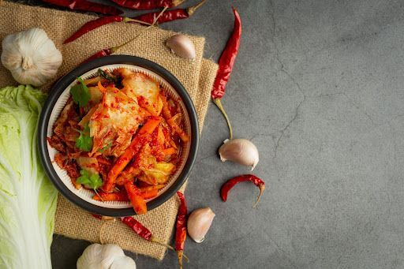
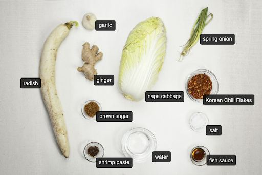
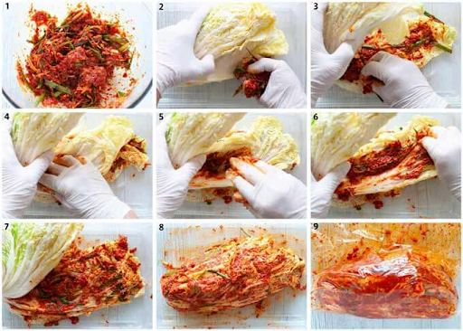
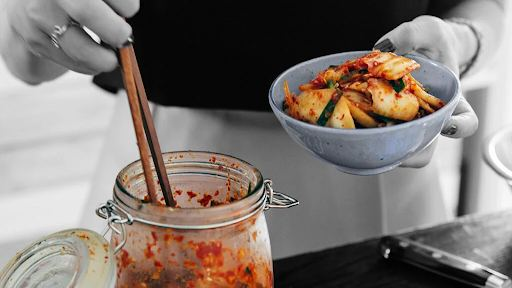

How to Make Authentic Kimchi at Home: A Step-by-Step Guide

Kimchi, a staple in Korean cuisine, is celebrated for its robust flavors and nutritional benefits. This authentic kimchi recipe offers a journey into the heart of Korean culinary traditions. With a history stretching back centuries, kimchi embodies both cultural heritage and communal dining practices in Korea.
Making homemade kimchi allows for personalized flavor profiles and texture preferences, enhancing the dining experience. The process of fermentation not only enriches the taste but also amplifies its health benefits, providing vital probiotics essential for gut health and overall nutrition.
For those eager to explore this flavorful world, look no further than Miami Kimchi for inspiration and authentic recipes. Their commitment to traditional methods ensures a rich taste that honors the essence of Korean culture while being accessible to modern palates.
Embark on this exciting culinary adventure with our step-by-step guide , ideal for beginners seeking an easy yet authentic introduction to making kimchi at home.
What is Kimchi?
Kimchi is a traditional Korean dish made from fermented vegetables, primarily napa cabbage and Korean radish. It is known for its bold and tangy flavor, which comes from a combination of garlic, ginger, and Korean red pepper flakes used in the seasoning.
Nutritional Benefits
Kimchi is not only delicious but also packed with nutrients. Here are some of the health benefits it offers:
- Probiotics : The fermentation process creates beneficial bacteria called probiotics, which promote a healthy gut by maintaining a balanced digestive system.
- Vitamins and Minerals : Kimchi is rich in vitamins A, B, and C, as well as important minerals like calcium and iron. These nutrients support immune function and overall well-being.
With its unique taste and impressive nutritional profile, kimchi has become a popular addition to meals around the world. It is not only enjoyed as a side dish but also incorporated into various recipes for an extra boost of flavor and health benefits.
Types of Kimchi
Kimchi is a versatile and integral part of Korean cuisine, with numerous variations that cater to diverse taste preferences and regional differences. Here are some of the most popular types:
1. Tongbaechu Kimchi
Often considered the quintessential kimchi, Tongbaechu is made by fermenting whole or halved Napa cabbages. This type of kimchi is characterized by its robust flavor profile, achieved by stuffing the cabbage leaves with a rich paste made from red pepper flakes, garlic, ginger, and fish sauce.
2. Baechu Kimchi
A variant of Tongbaechu, Baechu Kimchi involves chopping the Napa cabbage into smaller pieces before fermentation. This method allows for easier mixing and serving, while maintaining the traditional flavors that make it a beloved staple in Korean households.
3. Kkakdugi
This version uses diced Korean radishes instead of cabbage. Kkakdugi is known for its refreshing crunch and slightly spicy kick. The radishes absorb the seasoning well, providing a crisp texture that complements many dishes.
These distinct types showcase the adaptability and depth of flavors that kimchi offers, each with its own unique taste and texture profile.
Essential Ingredients for Authentic Kimchi

Creating authentic kimchi at home requires a careful selection of ingredients that contribute to its complex flavors and textures. Here’s a detailed list of the essentials, ensuring you achieve the perfect balance in your homemade version:
- Napa Cabbage : The star ingredient, providing the crunchy texture that forms the base of traditional kimchi.
- Kosher Salt : Used for salting the cabbage, this coarse salt is ideal for drawing out moisture and beginning the fermentation process.
- Garlic and Ginger : These aromatics infuse the kimchi with deep flavor layers, essential for its signature taste profile.
- Gochugaru (Korean Red Pepper Flakes) : Adds heat and vibrant color to the paste; adjust to taste based on desired spiciness.
- Fish Sauce or Shrimp Paste : Imparts umami richness, a hallmark of authentic Korean kimchi, enhancing depth and complexity.
These core ingredients are crucial when learning how to make authentic kimchi at home, setting the foundation for a flavorful and nutritious dish.
Step-by-Step Guide to Making Kimchi at Home


Fermented foods are incredibly good for your health, mainly because they contain a lot of probiotics. Kimchi , a type of fermented food, is especially beneficial as it is loaded with Lactobacillus bacteria . These bacteria are essential for maintaining a healthy gut, improving digestion, and strengthening the immune system. They also help balance the gut microbiome, leading to better nutrient absorption and reduced inflammation.
Nutritional Powerhouse
In addition to probiotics, kimchi is also packed with vitamins and minerals. It contains important nutrients such as vitamins A, B, and C, which are known to support vision, boost energy levels, and enhance immune function. The fermentation process used to make kimchi actually increases the availability of these nutrients, making it easier for our bodies to absorb them.
Health Advantages of Fermented Foods
Including fermented foods like kimchi in your diet can bring about several health benefits:
- Better Digestion : Probiotics promote the growth of beneficial bacteria in the gut.
- Stronger Immune System : Antioxidants found in kimchi help fortify the immune system.
- Weight Control : Low in calories but high in fiber, aiding in weight management.
Adding kimchi to your meals not only adds flavor but also provides a wide range of health benefits.
Tips for Enjoying Your Homemade Kimchi
Kimchi is a versatile addition to various meals, whether consumed immediately or after extended fermentation. Here are some serving suggestions for kimchi :
1. Immediate Consumption
Freshly made kimchi can be enjoyed as a crisp, slightly tangy side dish alongside Korean BBQ or rice dishes.
2. Longer Fermentation
Allowing kimchi to ferment for longer results in deeper, more complex flavors. This mature version pairs excellently with stews or as a bold topping for burgers and tacos.
Pair your kimchi with dishes like grilled meats, soups, or even scrambled eggs to experience its vibrant taste and nutritional benefits.
Conclusion
Making your own kimchi at home is more than just following a recipe; it's an opportunity to discover new flavors, textures, and traditions that have been loved for generations. This guide gives you the basic skills you need to confidently make this classic Korean dish.
Fermentation is an art form that allows you to be creative in the kitchen while also enjoying the many health benefits it brings. The probiotics in kimchi are essential for promoting gut health, making homemade kimchi a tasty and nutritious addition to your meals.
Each time you make kimchi, you have the chance to try out different flavors and spice levels. Whether you like your kimchi fresh or prefer the complex taste that comes from longer fermentation, there are no rules when it comes to enjoying this lively dish. Share your homemade creations with family and friends, introducing them to the diverse culture of Korean cuisine.
If you're inspired by this guide but prefer the convenience of store-bought options, you can explore brands like Miami Kimchi that offer authentic flavors made with care and passion. Whether you choose to make it yourself or buy it from a store, kimchi opens up a world of bold tastes and shared moments.
Frequently Asked Questions
-
What is kimchi?
Kimchi is a traditional Korean fermented dish made from vegetables and spices, commonly using napa cabbage and Korean radish. It is known for its nutritional benefits, including probiotics that promote gut health, as well as being rich in various vitamins and minerals.
-
What are the essential ingredients for making authentic kimchi?
The essential ingredients needed to make authentic kimchi include napa cabbage, kosher salt, garlic, ginger, gochugaru (Korean red pepper flakes), and either fish sauce or shrimp paste.
-
What are the steps to prepare kimchi at home?
To prepare kimchi at home, follow these steps: 1) Prepare the cabbage by cutting and soaking it in salty brine. 2) Rinse and drain the cabbage thoroughly. 3) Make the kimchi paste using garlic, ginger, sugar, and gochugaru. 4) Combine the drained cabbage with the paste. 5) Pack the mixture into jars for fermentation. 6) Allow it to ferment at room temperature for several days based on taste preference. 7) Store the fermented kimchi in the refrigerator.
-
How long should kimchi ferment?
Kimchi should be allowed to ferment at room temperature for about 1-5 days depending on your taste preference. After this period, it can be transferred to the refrigerator to slow down further fermentation.
-
What are some health benefits of consuming fermented foods like kimchi?
Fermented foods like kimchi are rich in probiotics such as Lactobacillus bacteria, which can improve gut health, enhance digestion, boost immunity, and provide overall nutritional benefits.
-
What are some tips for enjoying homemade kimchi?
You can enjoy homemade kimchi immediately after fermentation or allow it to ferment longer for a stronger flavor. It pairs well with various dishes and can be used as a side dish or ingredient in recipes like fried rice or stews.
< Older Post
Newer Post >
Shop these ingredients at Kimchi Mart
Six stores across South Florida — or order online and pick up in an hour.